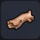 |
큰 유목 | 어딘가에서 흘러들어온 큰 나무 | 첨벙첨벙섬 바다 / 해변 |
／ |
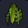 |
해초 | 해류에 흔들리는 미끈미끈하고 커다란 식물 | 첨벙첨벙섬 바다 / 해변 |
／ |
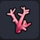 |
분홍색 산호 | 바닷속에 사는 예쁜 분홍색 산호 | 첨벙첨벙섬 | ／ |
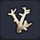 |
하양 산호 | 바닷속에 사는 예쁜 하얀색 산호 | 첨벙첨벙섬 | ／ |
| 검정 산호 | 바닷속에 사는 예쁜 검은색 산호 | 첨벙첨벙섬 | ／ | |
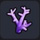 |
보라 산호 | 바닷속에 사는 예쁜 보라색 산호 | 첨벙첨벙섬 | ／ |
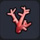 |
빨강 산호 | 바닷속에 사는 예쁜 빨간색 산호 | 첨벙첨벙섬 | ／ |
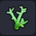 |
초록 산호 | 바닷속에 사는 예쁜 초록색 산호 | 첨벙첨벙섬 | ／ |
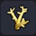 |
노랑 산호 | 바닷속에 사는 예쁜 노란색 산호 | 첨벙첨벙섬 | ／ |
| 파랑 산호 | 바닷속에 사는 예쁜 파란색 산호 | 첨벙첨벙섬 | ／ | |
| 큰 분홍색 산호 | 바닷속에서 자란 크고 예쁜 분홍색 산호 | 첨벙첨벙섬 | ／ | |
| 큰 하양 산호 | 바닷속에서 자란 크고 예쁜 하얀색 산호 | 첨벙첨벙섬 | ／ | |
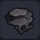 |
큰 검정 산호 | 바닷속에서 자란 크고 예쁜 검은색 산호 | 첨벙첨벙섬 | ／ |
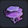 |
큰 보라 산호 | 바닷속에서 자란 크고 예쁜 보라색 산호 | 첨벙첨벙섬 | ／ |
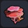 |
큰 빨강 산호 | 바닷속에서 자란 크고 예쁜 빨간색 산호 | 첨벙첨벙섬 | ／ |
| 큰 초록 산호 | 바닷속에서 자란 크고 예쁜 초록색 산호 | 첨벙첨벙섬 | ／ | |
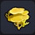 |
큰 노랑 산호 | 바닷속에서 자란 크고 예쁜 노란색 산호 | 첨벙첨벙섬 | ／ |
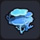 |
큰 파랑 산호 | 바닷속에서 자란 크고 예쁜 파란색 산호 | 첨벙첨벙섬 | ／ |
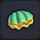 |
진주조개 | 예쁜 진주를 만들어내는 조개 ※ 배출되는 공기방울을 터치하면 ST가 회복 |
첨벙첨벙섬 | ／ |
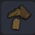 |
나무 조각 | 큰 나무 등을 부쉈을 때 남는 조각 | 오카무르섬 오아시스 목재 1 |
그루터기 작업대 |
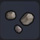 |
돌의 조각 | 큰 돌 등을 부쉈을 때 남는 돌 조각 | 오카무르섬 오아시스 석재 1 |
그루터기 작업대 |
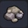 |
돌 조각 | 무너져 버린 돌 벽 | 오카무르섬 구리 채굴 기지 석재 2 |
그루터기 작업대 |
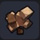 |
유적의 잔해 | 풍화되어 무너진 유적 벽의 잔해 | 오카무르섬 상층 철 광산 유적의 벽 1 |
그루터기 작업대 |
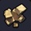 |
모래 벽돌 조각 | 무너져 버린 태고의 유적의 벽 | 텅 빈 섬 해변 계단의 입구 근처 모래 벽돌 1 |
그루터기 작업대 |
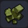 |
사교의 조각 | 하곤성의다 무너진 벽 | 오카무르섬의 불꽃 성당 텅 빈 섬 지하신전 주위 사교의 벽 1 |
그루터기 작업대 |
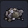 |
돌 둔덕 | 파낸 돌을 쌓아둔 것 | 오카무르섬 구리 채굴 기지 번쩍번쩍섬 |
／ |
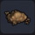 |
흙 둔덕 | 파낸 흙을 쌓아둔 것 | 오카무르섬 구리 채굴 기지 번쩍번쩍섬 |
／ |
| 거미집 | 거미줄로 만들어진 집 ※ 빌더 하트 10 교환 (잠금 해제) |
오카무르섬 구리 채굴 기지 솜 1 |
그루터기 작업대 | |
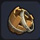 |
부서진 통 | 해변에 떠내려온 부서진 통 | 오카무르섬 선착장 통 1 |
그루터기 작업대 |
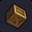 |
파묻힌 나무 상자 | 땅속에 묻힌 나무 상자 | 첨벙첨벙섬 등 나무 상자 1 |
그루터기 작업대 |
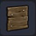 |
광산의 옹벽 | 파낸 광산 벽을 지지할 때 쓰이는 나무판 ※ 빌더 하트 10 교환 (잠금 해제) |
오카무르섬 구리 채굴 기지 | 텅 빈 섬 작업대 |
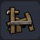 |
썩은 바리케이트 | 마물에게 파괴당한 방치된 울타리 | 오카무르섬 선착장 바리케이트 1 |
그루터기 작업대 |
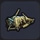 |
남루한 텐트 | 구멍이 뚫려 사람이 니낼 수 없게 된 텐트 | 어둑어둑섬 목재 2 풀 실 3 |
그루터기 작업대 |
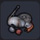 |
방치된 갑옷 | 과거의 전투에서 방치되어 썩어 버린 무구 | 꽁꽁섬 갑옷 보관대 1 |
그루터기 작업대 |
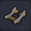 |
망가진 선로 | 망가져 사용할 수 없게 된 선로 | 오카무르섬 선착장 선로 1 |
그루터기 작업대 |
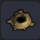 |
토굴 | 마물이 기어나올 것 같은 굴 ※ 빌더 하트 10 교환 (잠금 해제) |
주렁주렁섬 흙 3 |
그루터기 작업대 |
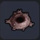 |
진흙굴 | 진흙으로 만들어진 무언가의 굴 ※ 빌더 하트 10 교환 (잠금 해제) |
질퍽질퍽섬 진흙 3 |
그루터기 작업대 |
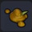 |
똥 | 동물이 떨어뜨린 것 | 질퍽질퍽섬 / 상한 작물 근처 | ／ |
| 뼈 | 대답이 없는 그냥 시체가 되어 버린 뼈 | 으스스섬 | ／ | |
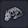 |
용족의 뼈 | 커다란 드래곤의 전신 뼈 | 어둑어둑섬 | ／ |
| 짐승의 뼈 | 알 수 없는 동물의 뼈 | 번쩍번쩍섬 | ／ | |
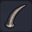 |
대지를 꿰뚫는 송곳니 | 파괴신 시도의 거대한 송곳니 | 으스스섬 | ／ |
| 찢어발기는 발톱 | 파괴신 시도의 모든 것을 찢어버리는 발톱 | 으스스섬 | ／ | |
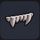 |
으스러뜨리는 윗니 | 파괴신 시도의 무엇이든 으스러뜨리는 윗니 | 으스스섬 | ／ |
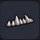 |
으스러뜨리는 아랫니 | 파괴신 시도의 무엇이든 으스러뜨리는 아랫니 | 으스스섬 | ／ |
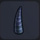 |
꿰뚫어버리는 큰 뿔 | 파괴신 시도의 뾰족하고 날카로운 뿔 | 으스스섬 | ／ |
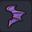 |
휘감기는 뺨지느러미 | 파괴신 시도의 불길한 지느러미 | 으스스섬 | ／ |
| 빛을 발하는 눈 | 파괴신 시도의 흉흉한 빛을 뿜는 눈알 | 으스스섬 | ／ | |
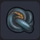 |
뒤엉킨 꼬리 | 파괴신 시도의 소름 끼치는 꼬리 | 으스스섬 | ／ |
| 기묘한 큰 꽃 | 독이 있을 것만 같은 거대한 식물 | 으스스섬 | ／ | |
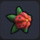 |
기묘한 꽃 | 독이 있을 것만 같은 작은 식물 | 으스스섬 | ／ |
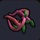 |
기묘한 큰 덩굴 - 가로 | 독이 있을 것만 같은 덩굴 식물 | 으스스섬 | ／ |
| 기묘한 덩굴 | 독이 있을 것만 같은 덩굴 식물 | 으스스섬 | ／ | |
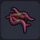 |
기묘한 긴 덩굴 - 가로 | 독이 있을 것만 같은 덩굴 식물 | 으스스섬 | ／ |
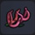 |
기묘한 큰 덩굴 - 상 | 독이 있을 것만 같은 담쟁이덩굴 | 으스스섬 | ／ |
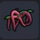 |
기묘한 큰 덩굴 - 하 | 독이 있을 것만 같은 담쟁이덩굴 | 으스스섬 | ／ |
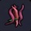 |
기묘한 긴 덩굴 - 세로 | 독이 있을 것만 같은 담쟁이덩굴 | 으스스섬 | ／ |
| 말랑말랑 젤리 | 물컹물컹한 기분 나쁜 파란 물체 | 번쩍번쩍섬 | ／ | |
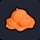 |
말랑말랑 젤리 베스 | 물컹물컹한 기분 나쁜 빨간 물체 | 어둑어둑섬 | ／ |
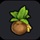 |
약초 장식 | 약초 모양을 한 치유되는 장식 ■ 무료 DLC (아이템 레시피 세트) |
목재 10 기름 5 | 텅 빈 섬 작업대 |
| 슬라임 타워 | 슬라임을 쌓아 놓은 귀여운 장식 ■ 색 변경 가능 ■ 무료 DLC (아이템 레시피 세트) |
목재 10 기름 5 | 텅 빈 섬 작업대 | |
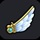 |
키메라의 날개 장식 | 키메라의 날개로 만든 장식 ■ 무료 DLC (아이템 레시피 세트) |
DQ10 콜라보 퀘스트용 풀 실 10 |
텅 빈 섬 작업대 |
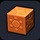 |
문장 블록 - 태양 | 태양의 문장이 그려진 블록 ■ 무료 DLC (문장의 블록 세트) |
석재 10 | 텅 빈 섬 작업대 |
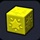 |
문장 블록 - 별 | 별의 문장이 그려진 블록 ■ 무료 DLC (문장의 블록 세트) |
석재 10 | 텅 빈 섬 작업대 |
| 문장 블록 - 달 | 달의 문장이 그려진 블록 ■ 무료 DLC (문장의 블록 세트) |
석재 10 | 텅 빈 섬 작업대 | |
| 문장 블록 - 물 | 물의 문장이 그려진 블록 ■ 무료 DLC (문장의 블록 세트) |
석재 10 | 텅 빈 섬 작업대 | |
| 문장 블록 - 생명 | 생명의 문장이 그려진 블록 ■ 무료 DLC (문장의 블록 세트) |
석재 10 | 텅 빈 섬 작업대 | |
| 도트 장식 - 왕자1 | 로레시아 왕자의 도트 장식 ■ 무료 DLC (아이템 레시피 세트) |
석재 10 | 텅 빈 섬 작업대 | |
| 도트 장식 - 왕자2 | 사말토리아 왕자의 도트 장식 ■ 무료 DLC (아이템 레시피 세트) |
목재 10 | 텅 빈 섬 작업대 | |
| 도트 장식 - 공주 | 문부르크 공주의 도트 장식 ■ 무료 DLC (아이템 레시피 세트) |
풀 실 10 | 텅 빈 섬 작업대 | |
| 멜키드의 수호벽 | 마물의 침입을 막는 매우 크고 튼튼한 벽 ※ 뒹굴뒹굴섬에서 골렘이 드롭 |
마물에서 드롭 | ／ | |
| 목재 | 나무를 부수면 얻을 수 있는 대형 목재 | 나무를 파괴 무한 사용 목록： 질퍽질퍽섬 |
금단의 연성대 | |
| 석재 | 암석을 부숴서 가공한 것 | 큰 돌을 파괴 무한 사용 목록：꽁꽁섬 |
／ | |
| 마른 풀 | 건조한 풀 | 시들고 마른풀을 파괴 무한 사용 목록： 질퍽질퍽섬 |
금단의 연성대 | |
| 실 | 덩굴을 엮어 만든 가느다란 실 | 담쟁이덩굴을 파괴 무한 사용 목록： 주렁주렁섬 |
／ | |
| 풀 실 | 식물의 섬유를 엮어 만든 실 | 풀들을 파괴 무한 사용 목록： 주렁주렁섬 |
／ | |
| 약잎 | 상처를 치유하는 성분이 다량 함유된 잎 | 약잎 덤불을 파괴 | ／ | |
| 좋은 약잎 | 상처를 치유하는 성분이 듬뿍 함유된 잎 | 약잎 덤불을 파괴 | ／ | |
| 솜 | 하얗고 푹신푹신한 섬유 | 솜털 풀을 파괴 섬에 찾아온 양이 드롭 |
／ | |
| 벚꽃 잎 | 벚나무에서 얻은 색이 고운 꽃잎 | 주렁주렁섬에서 벚나무를 파괴 어둑어둑섬에서 우들러가 드롭 |
／ | |
| 거름 | 동물이 만들어낸 무언가, 항아리에서도 얻을 수 있다 | 화장실에서 입수 질퍽질퍽섬에서 썩은 시체가 드롭 |
／ | |
| 석탄 | 흙 속에서 오랜 세월을 거쳐 변화한 식물 | 석탄을 포함한 블록을 파괴 무한 사용 목록：뒹굴뒹굴섬 |
／ | |
| 유리 | 깨지기 쉬운 투명한 소재 | 모래 3 | 화로 | |
| 구리 | 갈색으로 무디게 빛나는 가공하기 수월한 금속 | 구리를 포함한 블록을 파괴 무한 사용 목록： 번쩍번쩍섬 |
／ | |
| 철 | 검게 빛나는 금속으로 다양한 것들에 쓰인다 | 철을 포함한 블록을 파괴 무한 사용 목록：뒹굴뒹굴섬 |
／ | |
| 은 | 철보다 단단하고 비싼 아름다운 금속 | 은을 포함한 블록을 파괴 무한 사용 목록： 번쩍번쩍섬 |
／ | |
| 금 | 반짝반짝 빛나는 아름다운 광석 | 금을 포함한 블록을 파괴 무한 사용 목록： 첨벙첨벙섬 |
／ | |
| 미스릴 | 가볍지만 강철보다 튼튼한 금속 | 미스릴을 포함한 블록을 파괴 뒹굴뒹굴섬 |
／ | |
| 다이아몬드 | 반짝반짝 빛나는 단단한 보석 | 다이아몬드를 포함한 블록을 파괴 뒹굴뒹굴섬 |
／ | |
| 마력의 수정 | 마력이 깃든 보라색 수정 | 마력의 수정암을 파괴 무한 사용 목록：꽁꽁섬 |
／ |